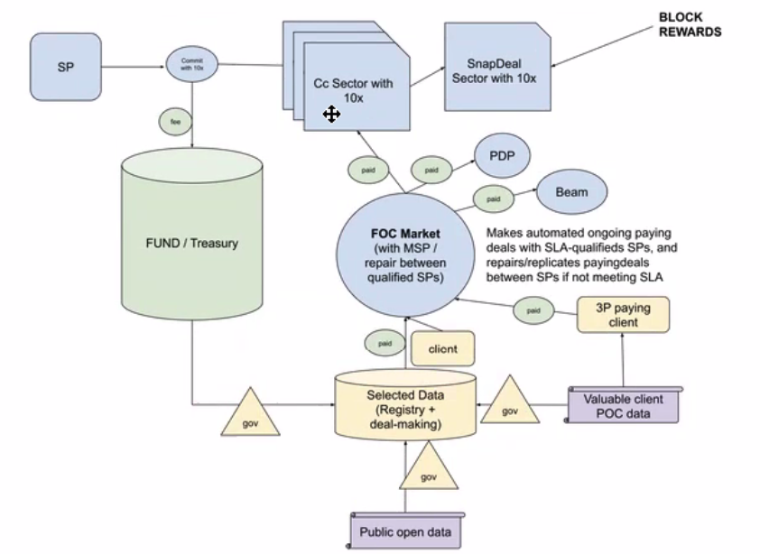
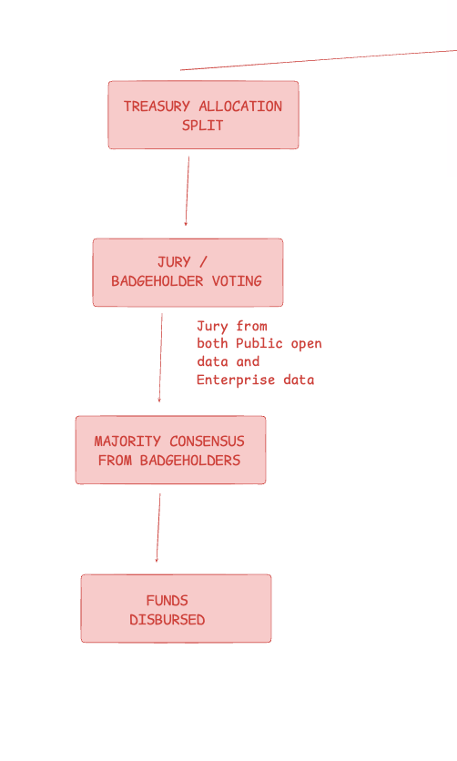
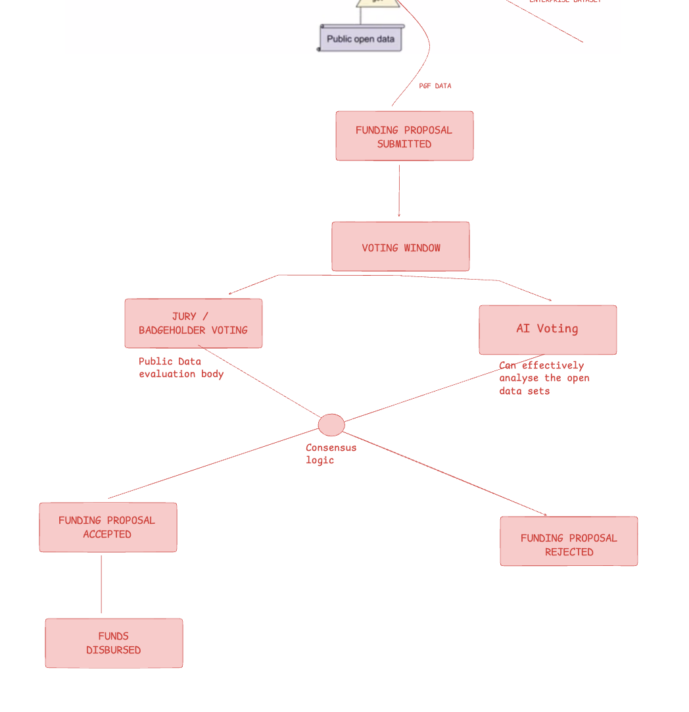
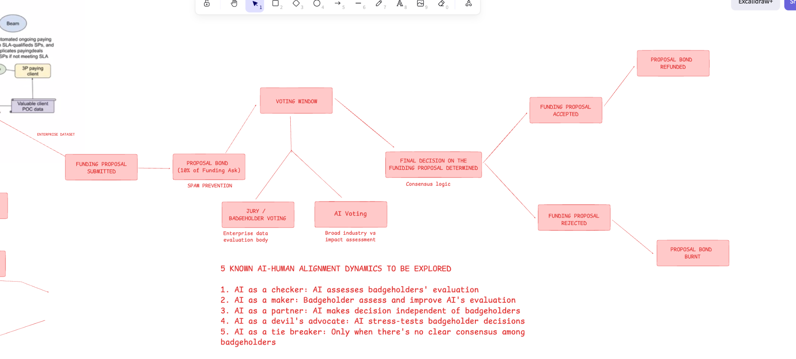
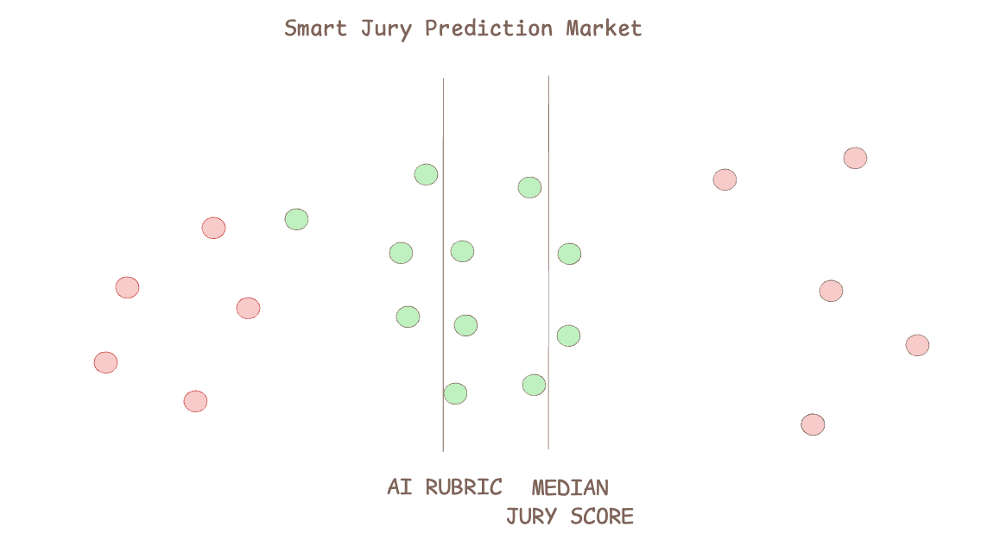

Designing credible, capture-resistant governance for Filecoin's storage incentive program across public-goods data, enterprise clients, and treasury allocation.
Filecoin is a decentralised storage network that pays storage providers block rewards for reliably holding data over time. FIL+ is Filecoin's verified-storage program: it boosts block rewards for providers who store data that has been vouched for as useful — originally public datasets, and increasingly enterprise workloads. A set of badgeholders attests to the value of incoming data, and a treasury funds subsidies that make verified deals economically competitive. As the program grows, deciding who gets to attest, how subsidies are prioritised, and how much goes to public-goods versus commercial storage become the central governance questions.
The Challenge
FIL+ sits at the intersection of public-goods data and enterprise-driven storage demand. As the program scales, the core challenge is no longer whether to support datasets, but how to allocate incentives and funding credibly across fundamentally different use cases.
A single governance model risks either over-indexing on commercial viability or under-serving the public-goods mission. The framework needed to answer three questions simultaneously: how to split treasury funds, how to evaluate public datasets at scale, and how to assess enterprise proposals with the nuance they require.
This exploration tested whether combining AI signals, expert judgment, and structured governance could improve FIL+ funding outcomes without increasing capture risk.

The Approach
The framework is built on three validated assumptions, each of which maps directly to a governance track and a recommended decision model.
Treasury allocation is a meta-governance decision that shapes the overall direction of FIL+ incentives. A standing committee with representatives from both the Public Open Data and Enterprise tracks proposes allocation percentages, which are then reviewed by a mixed jury and ratified by badgeholder voting.
Mixed representation is the key design lever here. By requiring input from both tracks, treasury decisions reflect the full ecosystem's interests and prevent capture by either the commercial or public-goods faction.

Public data is inherently transparent and machine-readable, making AI evaluation tractable. The AI can verify dataset integrity, assess completeness, and compare against existing public datasets — tasks that are significantly harder with proprietary enterprise data.
A jury-based evaluation system is augmented with AI rubric scoring and median jury alignment. The AI provides an objective assessment layer while human jurors bring contextual judgment that algorithms may miss. Scores are combined using a consensus mechanism selected during Phase 1.

Enterprise proposals involve proprietary information, nuanced commercial judgment, and relationship context that AI cannot reliably assess. A small, trusted jury of domain experts evaluates proposals and ranks them using Ranked Choice Voting.
Enterprise applicants post a bond to participate. The bond is refunded upon proposal acceptance and burned upon rejection, creating a direct incentive for high-quality submissions and positively impacting FIL token value accrual.

Key Design Decisions
Each decision below surfaced during the design process and had a material impact on the final governance architecture.
Public open data is machine-verifiable: dataset integrity, completeness, and coverage can be assessed algorithmically. Enterprise data is not. Commercial viability, SLA realism, and competitive positioning require the kind of contextual, relationship-aware judgment that current AI systems cannot reliably provide. The decision to apply AI selectively — to Track 2 only — was deliberate, not a limitation.
The framework does not prescribe a single AI-Human alignment mechanism. Instead, five well-researched models are candidates for Phase 1 evaluation. The recommended starting point is AI as Partner, where AI and jury scores are computed independently and then combined.
| Model | How it works |
|---|---|
| AI as Checker | AI validates jury evaluations for internal consistency |
| AI as Maker | Jury reviews and refines AI's initial evaluation |
| AI as Partner | Independent scores combined — recommended for Phase 1 |
| AI as Devil's Advocate | AI stress-tests jury decisions by challenging assumptions |
| AI as Tie Breaker | AI weighs in only when jury reaches no clear consensus |
Traditional governance voting has no feedback loop: jurors have no incentive for accurate judgment, and there is no mechanism to surface private information. Prediction markets address both problems. Jurors who are consistently aligned with both the AI rubric (on objective criteria) and the median score (on collective alignment) are identified as more reliable and incentivized accordingly. Divergences reveal where AI misses context that humans catch.

Enterprise applicants are required to post a bond before their proposal enters jury review. The bond is refunded if the proposal is accepted, and burned if rejected. This mechanism does two things: it filters out low-effort submissions before they consume jury time, and it aligns proposer incentives with proposal quality. The burn-on-rejection path also contributes to FIL token value accrual, creating a secondary ecosystem benefit.
Impact
The framework delivers four concrete governance outcomes and a phased path to implementation.
Mixed-track treasury committees prevent either commercial or public-goods factions from dominating funding decisions.
Public dataset review scales without proportional jury growth, while preserving human override on edge cases.
The bond mechanism filters low-quality proposals and creates a direct link between submission quality and token value.
Each track operates independently. Consensus mechanisms and jury composition can be tuned per-track without redesigning the system.
Finalize the three-track model. Run structured pilots of AI-Human consensus mechanisms on a representative set of public dataset proposals. Recruit and onboard jury candidates for both Public Open Data and Enterprise tracks.
Draft and submit the required FIPs covering QAP changes, PoRep market enablement (sector notification), and fee governance via FRC. Coordinate with the broader Filecoin governance community for review and feedback.
Execute treasury allocation under the new model, with monthly reexamination for the first quarter and quarterly cadence thereafter.